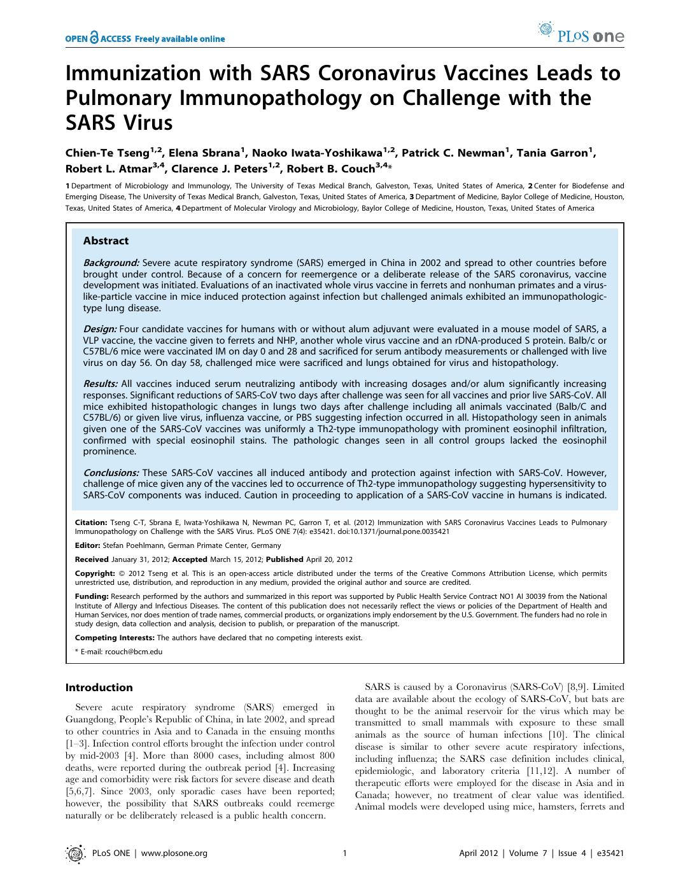
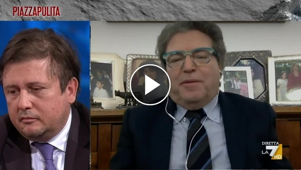

55:27 · 4 OPERE
Come se nulla fosse mai stato.
Il filo del discorso
Perché una società che conosce le catastrofi del passato sembra ripetere i meccanismi che le hanno preparate? Caldarella pone questa domanda partendo da Psicologia delle folle di Gustave Le Bon. La capacità di impressionare la immaginazione viene letta come una tecnica di governo che sostituisce la argomentazione con immagini e slogan. Il discorso di Mussolini del10 giugno1940 offre il contrasto fra entusiasmo collettivo e conseguenze della guerra. La analogia è utilizzata dal relatore per giudicare la comunicazione della pandemia, senza che la scheda trasformi questa comparazione in una identità storica dimostrata. Una parte centrale riguarda il rapporto fra critica, autorità e verifica scientifica. Il video richiama uno studio del2012 sui vaccini sperimentali contro la SARS e un confronto televisivo fra Pierpaolo Sileri e Mariano Amici. Caldarella contesta il modo in cui i titoli e la posizione pubblica possono essere usati per svalutare un interlocutore. La scheda distingue il problema del confronto da quello della validità delle affermazioni sanitarie: risultati preclinici nei topi non dimostrano il danno di vaccini diversi nelle persone; una casistica raccontata in televisione non sostituisce uno studio controllato; il numero di pubblicazioni non misura da solo qualità o scorrettezza della ricerca. La discussione passa al linguaggio delle mascherine, alla parola negazionista e al confronto fra dimensioni di virus e filtri. Proprio la richiesta di precisione impone qui una correzione: la filtrazione non funziona come un semplice setaccio, e il rapporto fra micro e nanometri non basta a determinarne la efficacia. Il richiamo a Madison e alla scena del mago dietro la tenda illustra la ipotesi di una regia della comunicazione; somiglianze linguistiche e immagini suggestive non ne costituiscono una prova. Una ulteriore digressione sulla formula giornalistica Nobel del porno serve al relatore per denunciare quello che considera uno svuotamento dei nomi e una mercificazione della persona. Il principio di precauzione diventa infine una questione etica e democratica: Caldarella vi vede la disponibilità ad ammettere errore e incertezza. La scheda conserva questa domanda e distingue la valutazione dei rischi da una pretesa di prova assoluta di innocuità. Il finale lega consumo di prodotti, consumo di opinioni e perdita della capacità di giudicare. La alternativa proposta è una lettura che interroghi e trasformi chi legge, anziché servire soltanto a ottenere titoli: la cultura come accensione di un pensiero autonomo e come memoria operante delle conseguenze della storia.
I libri nel discorso

Psicologia delle folle
Copertina: Apogeo · 2025 · nuova traduzione dell’edizione integrale originale
Immagine autentica dell’opera, controllata visivamente; l’edizione di riferimento non è attribuita al filmato.
Le Bon e Psicologia delle folle espliciti, con data originale1895 e richiamo a una edizione1921 non identificata come quella della copertina di riferimento.
Passaggio 1:10 ↗ · Fonti e libro ↗
Immunization with SARS Coronavirus Vaccines Leads to Pulmonary Immunopathology on Challenge with the SARS Virus
Prima pagina originale · PLOS ONE, 2012 · CC BY: PLOS ONE 7(4): e35421, 20 aprile 2012, DOI10.1371/journal.pone.0035421. Prima pagina del PDF originale con abstract e indicazione della licenza CC BY, ©2012 Tseng et al.; non copertina di un libro. La correzione del 9 agosto 2012 concerne le figure1,2,4.
Derivata dalla prima pagina del PDF originale PLOS. ©2012 Tseng et al., Creative Commons Attribution; attribuzione agli autori e collegamento alla fonte mantenuti. Non è una copertina commerciale. Correzione successiva delle figure segnalata nei riferimenti.
Anno2012 e titolo riconoscibile nel parlato: articolo Tseng etal, PLOS ONE e35421, riscontrato sul testo principale e sulla correzione.
Passaggio 12:42 ↗ · Fonti e libro ↗
Covid, lo scontro tra il viceministro Sileri e il dott. Amici
Anteprima originale La7 · confronto Sileri–Amici: Piazzapulita, La7, gennaio2021. La URL reca29 gennaio2021 e la pagina consultata indica1 febbraio2021; compare anche una nota di aggiornamento riferita alla puntata del25 novembre2021, che non viene confusa con la data del confronto. Miniatura originale della clip.
Miniatura della clip ufficiale. La frase di Sileri è riportata dalla pagina; il suo significato politico è oggetto del commento del relatore, non una sentenza di minaccia o calunnia. Non è un libro.
Frase di Sileri e contesto del confronto identificati nella clip La7 con Amici; nessun ascolto umano integrale del video originale dichiarato.
Passaggio 17:42 ↗ · Fonti e libro ↗
Il mago di Oz / The Wizard of Oz
Immagine ufficiale Warner · edizione4K del film del1939: Film MGM,1939, con Judy Garland; la scheda Warner reca25 agosto1939. Immagine promozionale ufficiale della distribuzione4K attuale, non una stampa originale della prima uscita e non copertina del romanzo del1900.
Keyart contemporaneo della versione4K, proveniente dalla scheda Warner Bros. Non datato come poster originale1939 e non attribuito alla specifica scena dietro la tenda.
Titolo e battuta sulla persona dietro la tenda riconoscibili nel film; distinto dal romanzo di Baum del1900 già in biblioteca.
Passaggio 33:48 ↗ · Fonti e libro ↗Minutaggi ricavati da testi automatici, da riascoltare. Le identificazioni probabili sono segnalate accanto ai libri.